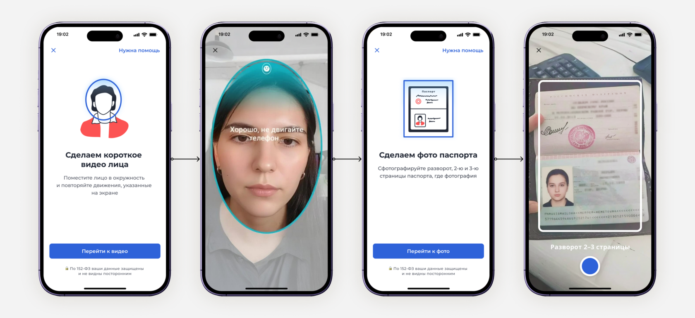
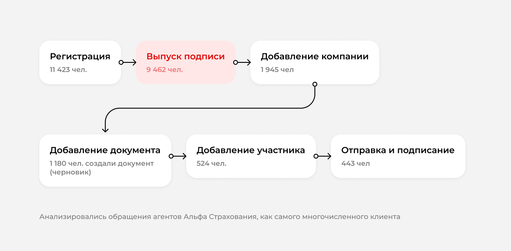
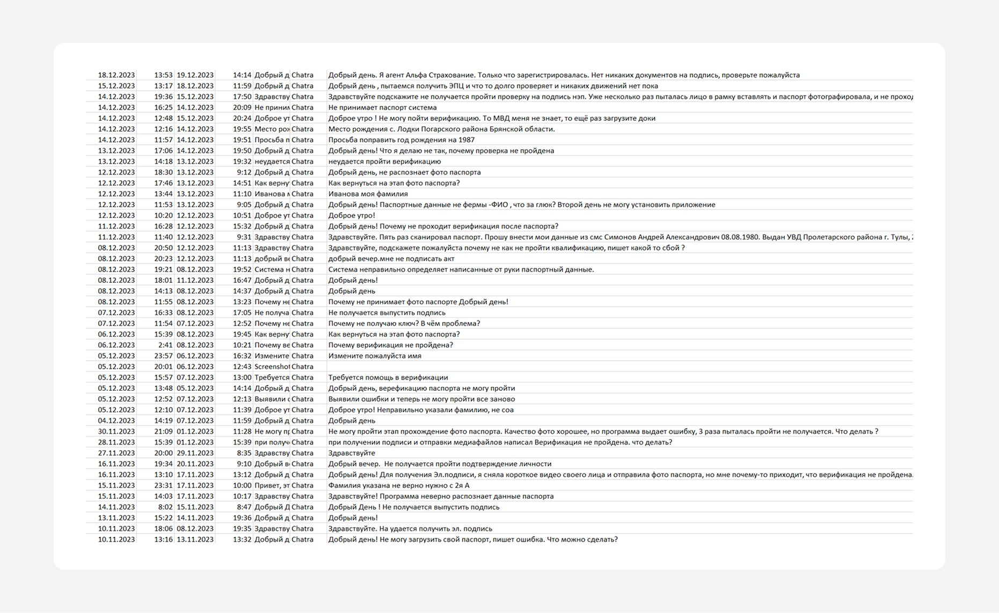
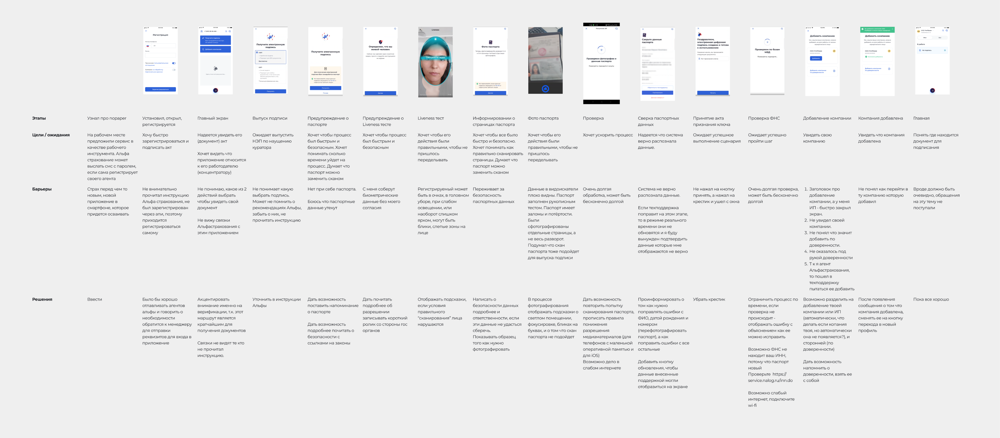
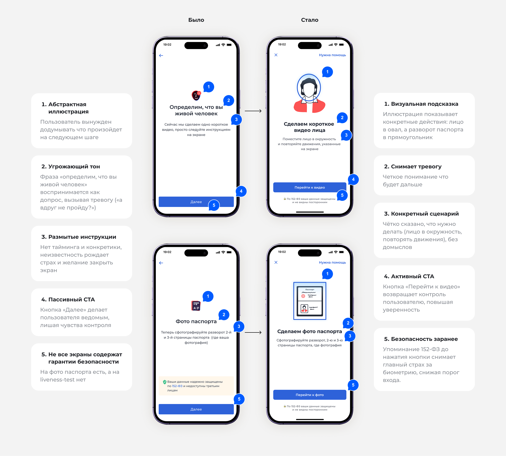
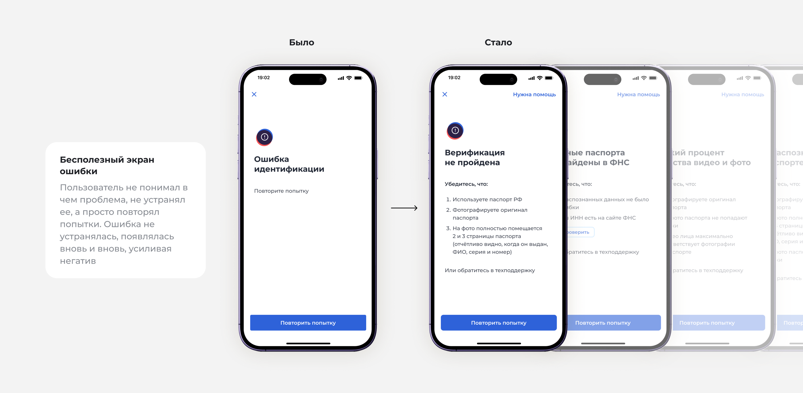
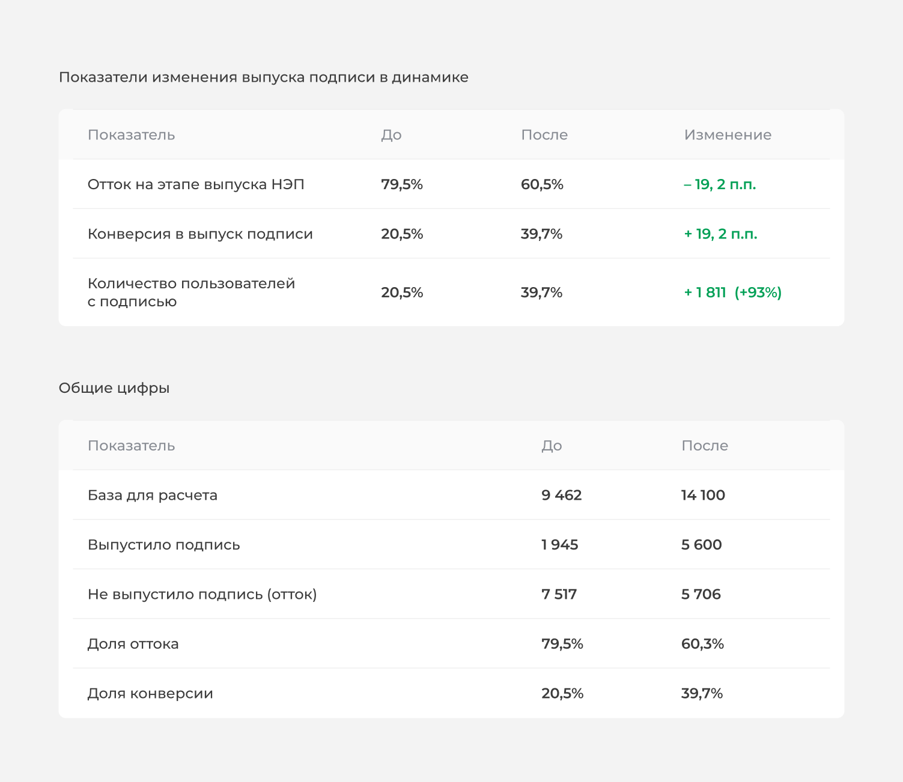

Улучшение первой пользовательской сессии в приложении мобильного ЭДО
Самостоятельно проанализировала воронку конверсии первой пользовательской сесии на основе обращений в техподдержку, улучшила экраны выпуска электронной подписи, добившись роста конверсии выпуска подписи с 20,5% до 39,7%
-
39,7%
конверсия выпуска подписи (было 20,5%)
-
60,5%
отток на этапе выпуска НЭП (было 79,5%)
-
+93%
пользователей с подписью
Замер примерно через полгода после релиза; других значимых изменений в сценарии за это время не было.

Контекст и роль продукта
Для выпуска НЭП сервис использует технологию Nopaper eKYC — полностью цифровую верификацию личности без визита в офис. Процесс включает: регистрацию, загрузку первого разворота паспорта, проверку по базам МВД и биометрию (liveness-test) определяющую что перед нами живой человек.
На момент старта исследований продукт насчитывал MAU 32 000. Технология в целом работала, но имела системные UX-дефекты, которые мы выявили через поддержку.

Проблема
После проверки паспорта и этапа биометрии, система часто выдавала общую ошибку «повторите попытку». Один и тот же сценарий мог повторяться несколько раз подряд. Пользователь не получал четкие инструкции что ему сделать чтобы решить проблему и дойти до цели.
Около 30% всех обращений в поддержку касались именно сценария выпуска НЭП. При этом выпуск подписи — критический шаг для получения ценности от приложения, напрямую влияющий на Activation Rate.
Доля оттока на этапе выпуска подписи достигла 79,45%. Конверсия в выпуск подписи 20,5%
Для бизнеса это влекло завышенные операционные расходы на техподдержку, скрытую потерю клиентов, которые не пишут и не звонят, а просто удаляют приложение, и главное последствие — потеря дохода.
Дизайн-исследование
Источники данных
- Обращения в техподдержку. Коллеги выгрузили из CRM сотни обращений от пользователей клиентов Альфа-страхования (за период с 3 ноября 2023 по 19 января 2024), самого многочисленного нашего клиента.
- Построение User-Generated Mapping (UGM) — карты типовых сценариев сбоев.

Я использовала ChatGPT для классификации текстов обращений и выявления наиболее частотных проблем. Это позволило быстро перейти от «много жалоб» к конкретным паттернам.
Проблемы при сканировании лица
- Очки или головной убор
- Слабое / слишком яркое освещение
- Блики или нечёткие участки на лице
Проблемы при сканировании паспорта
- Рукописное заполнение, заломы, потёртости
- Пользователи фотографируют отдельные страницы, а не разворот целиком
Анализ пользовательского опыта внутри приложения (UJM)

Ограничения
Мы не можем менять сам модуль сканирования лица и паспорта (сторонняя технология). Вся дизайн-работа сфокусирована на предшествующих экранах — там, где формируются ожидания пользователя и принимается решение «идти дальше или выйти».
Гипотезы
Опираясь на UJM и собственную экспертизу я вывела следующие гипотезы:
- Если заменить общую фразу «следуйте инструкциям» на конкретный сценарий и действиями, то пользователи будут реже закрывать экран до завершения, потому что снижается тревожность и неопределённость
- Если добавить иллюстрацию вызывающую что произойдет на следующем шаге то снизится когнитивная нагрузка, потому что графическая информация воспринимается легче чем текстовая
- Если заменить кнопку «Далее» на конкретное действие, то вовлечённость вырастет, потому что пользователь чувствует себя действующим лицом, а не объектом, и у него возникает ощущение контроля над процессом.
- Если точку входа в техподдержку разместить на самих экранах, то пользователь сможет получить консультацию в нужный ему момент и успешно дойдет до цели

Еще проработала экраны ошибок, попросила аналитиков прислать все возможное виды ошибок и продумала для каждой свою инструкцию с поэтапностью действий

Из-за ограничений по срокам мы сознательно пошли на риск — пропустили этап пользовательского тестирования, опираясь на данные UJM-анализа и собственную экспертизу, и отправили макет в разработку. Единственный доступный способ оценить результат — отследить динамику конверсии через 6 месяцев после релиза.
Метрики
Примерно, через полгода после релиза мы снова проанализировали воронку, количество переходов и обращения в поддержку. За этот период в сценарий выпуска подписи не вносилось других значимых изменений — это единственная переменная, которая менялась, что повышает уверенность в атрибуции роста именно редизайну.

Конверсия заметно выросла, но число обращений в поддержку (Contact Rate) не снизилось, а среднемесячный показатель даже слегка увеличился. Предполагаю, что это связано с добавлением точек входа в техподдержку на пре-сканировочных экранах — они сделали помощь более доступной.
Рефлексия
Несмотря на значительное улучшение ключевых метрик, доля оттока остаётся высокой — почти 6 из 10 пользователей всё ещё не доходят до выпуска подписи.
Анализ результатов показал, что основная проблема сохраняется на двух этапах сценария: сканирование лица и сканирование паспорта. Эти процессы очень зависят от внешних факторов: освещения, очков, ракурса, наличия документа под рукой, его физического состояния (заломы, потёртости, рукописный текст) и условий съёмки.
Даже с улучшенными инструкциями, иллюстрациями и конкретной обратной связью мы не можем устранить саму необходимость сканирования.
Вывод
Моя работа была направлена на смягчение последствий, а не на устранение причины. Я сделала процесс более понятным и дружелюбным, но сам по себе процесс остался сложным для пользователя.
Следующий шаг
В следующей итерации мы планируем заменить сканирование на технологию МТС ID — пользователь сможет просто ввести серию и номер паспорта вручную. Это уберёт саму причину ошибок и упростит сценарий до одного действия.